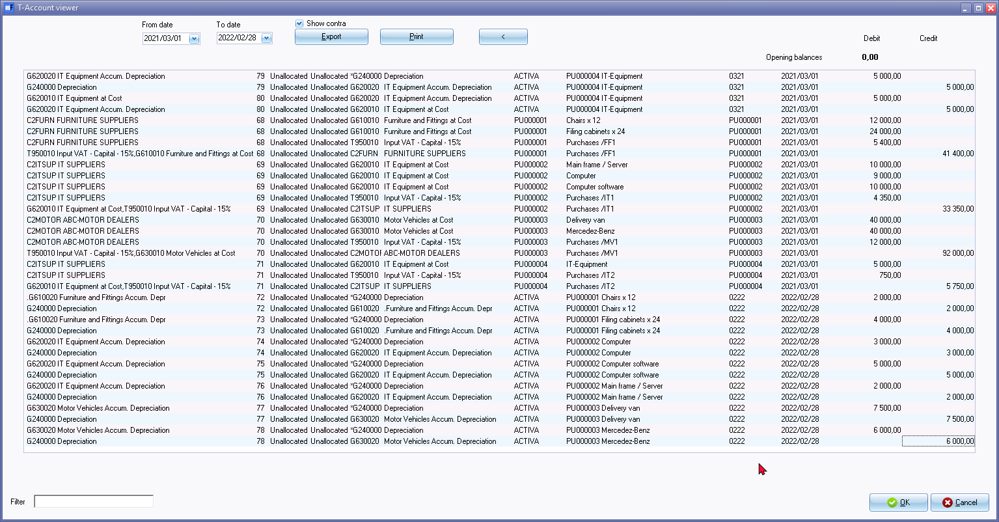
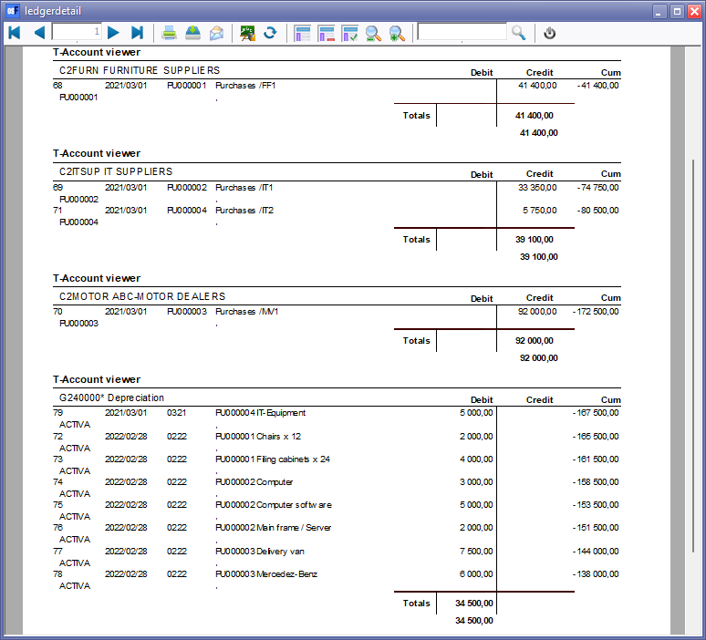
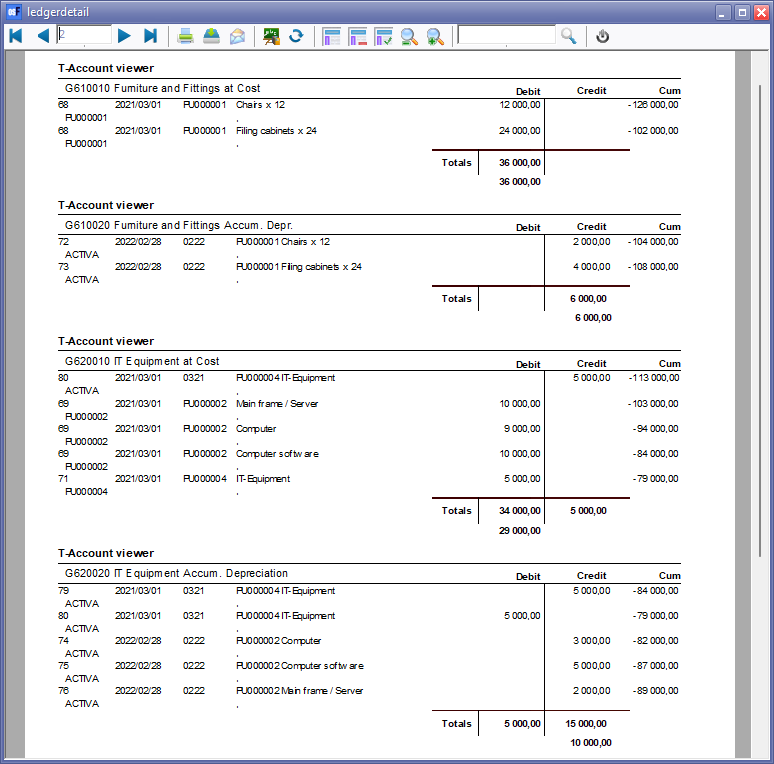
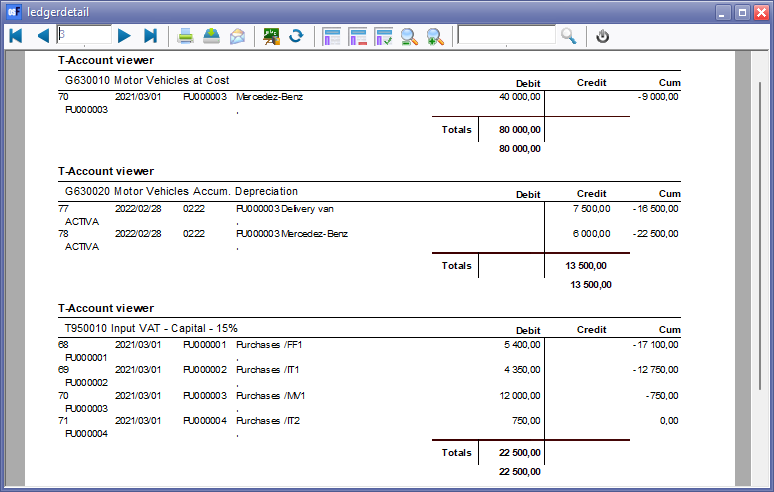
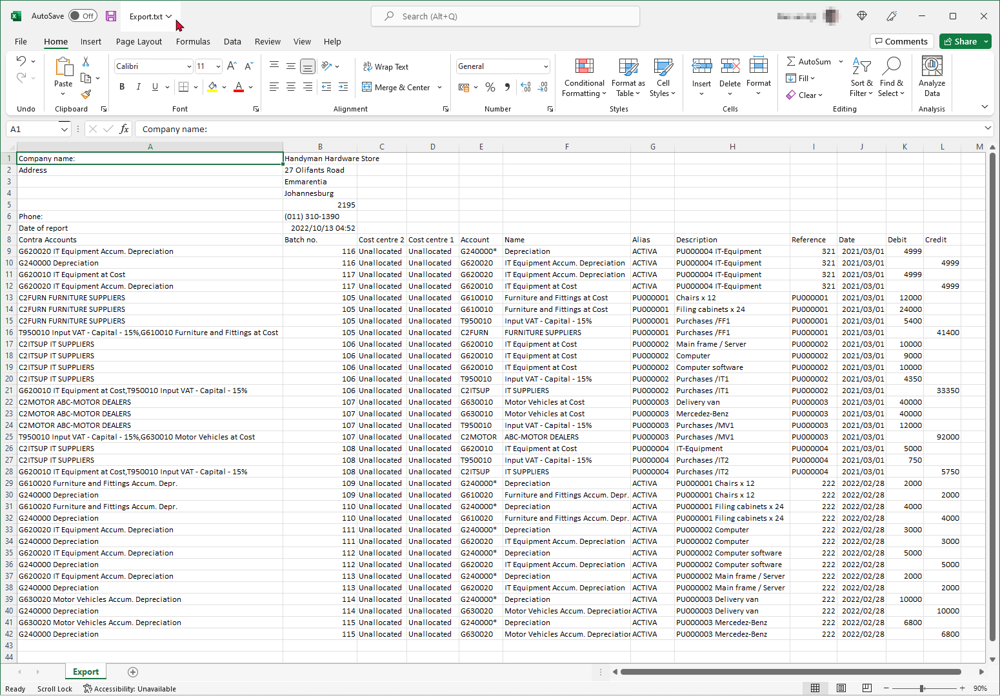

Activa transactions in the T-Account viewer
T-Account view of Activa transactions
You may use the T-Account viewer feature Ledger analyser, to filter for Fixed assets and Depreciation transactions, print the transactions and or export the transactions to a spreadsheet on the following report types.
- Trail balance - Fixed assets main accounts (Fixed assets at cost and/or Fixed assets accumulated depreciation sub-accounts} and the Depreciation - Income expense account type.
- Balance sheet - Fixed assets main accounts (Fixed assets at cost and/or Fixed assets accumulated depreciation sub- accounts).
- Income statement - Depreciation account - Income expense account type.
- Standard column balances - Fixed assets main accounts (Fixed assets at cost and/or Fixed assets accumulated depreciation sub- accounts} and the Depreciation - Income expense account type.
- This year vs last year - Fixed assets main accounts (Fixed assets at cost and/or Fixed assets accumulated depreciation sub- accounts} and the Depreciation - Income expense account type.
- Budget vs actual - Fixed assets main accounts (Fixed assets at cost and/or Fixed assets accumulated depreciation sub- accounts} and the Depreciation - Income expense account type.
|
|
In addition to these report types, you may also print and export transactions in the T-Account viewer to a spreadsheet for Fixed assets main accounts (Fixed assets at cost and/or Fixed assets accumulated depreciation sub- accounts} and the Depreciation - Income expense account type form the Column balances and Column balances D/C report types. |

An example of the purchases transactions for and write-off transactions processed with the Activa plugin, is for all periods during the life span of assets, as follows:

|
|
From date ... To date The default view of the Dates is automatically displayed for the selected period from which you launch the T-account viewer in the Ledger analyser. To view the Activa transactions over the life span of the Fixed assets or Depreciation account, you may select the dates. For example, the dates may be selected from date 2021/03/01 to 2027/02/28 to list all transactions for a specific fixed assets or depreciation accounts. |
|
|
Show contra - By default this option is not selected. If the Show contra is selected, it will insert (add) the Account code and Description before the batch id (batch number). The Contra accounts will not print on the T-Account viewer ("ledgerdetail") report; but will be included in the Export file when you click on the Export button of the T-Account viewer. |
|
|
Options to filter transactions
|
You may click on the Print button to print the transactions:



An example of the purchases transactions for and write off transactions processed with the Activa plugin exported to a spreadsheet, is as follows:
